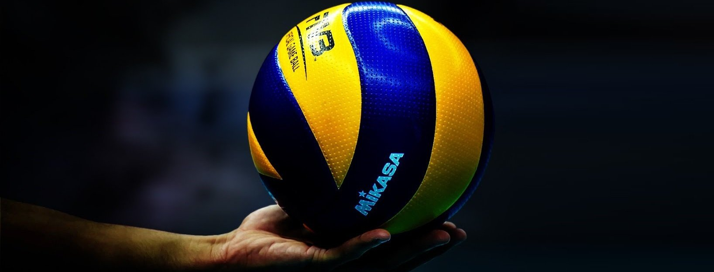

Стартует волейбольная Лига чемпионов. Сразу три российских клуба претендуют на победу
Автор:
Дата публикации: 1 декабря 2021

В преддверии домашнего чемпионата мира к еврокубкам повышенный интерес.
Лига чемпионов в этом году будет очень любопытной. Для многих игроков она станет проверкой перед чемпионатом мира в России. От нашей страны в главном клубном турнире сыграют «Динамо», питерский «Зенит» и «Локомотив», а в этих командах — значительная часть претендентов на попадание в сборную. Посмотреть уже этой зимой, как они смотрятся на фоне зарубежных топ-команд, — отличный бонус для всех нас.Расклады Есть у каждой из трех наших команд и турнирные амбиции. Как минимум о четвертьфинале помышляют все. Это не футбол. Для выхода из группы, напомним, нужно выигрывать свою группу или быть в числе трех лучших команд (из пяти), занявших второе место. Действующие чемпионы страны — «Динамо» — сыграют с «Варшавой», «Анкарой» и «Гриньярдом». По идее, москвичи должны бороться за первую строчку с поляками, в составе которых — чемпионы мира Бартош Кволек и Петр Новаковски. Команды из Турции и Бельгии по составу и возможностям куда скромнее. 1 декабря команда Константина Брянского встречается дома с «Варшавой», и очень важно сразу было бы показать, кто в квартете хозяин. Дальше будет проще. В этот же вечер в Питере «Зенит» будет экзаменовать «Бенфику» — лучшую команду Португалии. Еще с ними в группе чемпионы Сербии — «Войводина» — и Германии — «Берлин». Российский клуб здесь безусловный фаворит. Хотя с немцами (ну как немцами — тон там задают наш Сергей Гранкин и американцы) просто не будет. Тем не менее шансы на плей-офф представляются весомыми. Тяжелее всего придется «Локомотиву». Новосибирску не фартануло с жеребьевкой: в соперниках — действующий победитель Лиги чемпионов «Закса» и чемпион Италии-2021 «Лубе Чивитанова». Кто хуже — непонятно. У «Заксы» — сплошь игроки сборной Польши плюс Дэвид Смит и Эрик Шоджи, американские звезды. У «Лубе» вообще «дрим-тим»: Хуанторена, Лукарелли, Зайцев, Симон, де Чекко. Да, кстати, и третью команду со счетов сбрасывать нельзя. «Марибор» — чемпионы Словении, а насколько хороши волейболисты этой страны, можно понять по последним Евро. Натуральная группа смерти. Как в ней выжить — большой вопрос. Но для молодой сибирской команды такая мясорубка — огромный опыт. Начинает команда Пламена Константинова в Италии. Будет трудно. «Чивитанова» за восемь ноябрьских матчей проиграла один лишь сет.
Комментарий

...
В ЛЧ нашим клубам ловить нечего,как и в прошлом году--там всё разыграют между собой итальянские и польские клубы,а вот в ЛЕ шансы есть-это подтвердило московское Динамо в прошлом году.